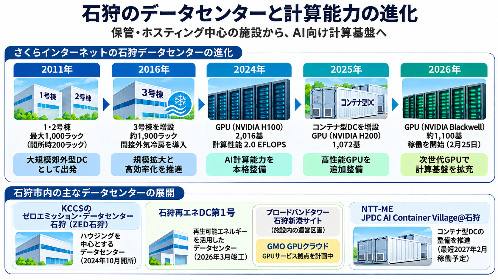

北海道・石狩市
第5章 石狩のデータセンターは、どのような設備と計算能力を備えているのか
5.1 さくらインターネット――大規模郊外型データセンターからAI計算基盤へ
2011年11月15日、さくらインターネットは石狩データセンターを開所しました。敷地面積は51,448㎡、東京ドームの約1.1倍に相当する広さです。開所時には1号棟と2号棟の建物が整備され、2棟合わせて最大1,000ラックを収容できる構成となっていました。
ラックとは、サーバーや通信機器を収容する棚状の設備です。データセンターの規模を表す際に広く使われますが、ラックが何台設置されているかと、実際に何台のサーバーが稼働しているかは同じではありません。
さくらインターネットが開所時に設置したのは200ラックでした。建物には最大1,000ラックを収容できる余地がありましたが、最初からすべてのラックを設置するのではなく、利用需要に応じて設備を追加する設計が採用されていました。電源やサーバールームも段階的に増設できる構成とし、将来的には最大8棟、4,000ラックまで拡張する計画です。（さくらインターネット「2011年11月15日に石狩データセンターを開所」、2011年）
このような方式には、初期投資と将来の需要に対応するうえで意味があります。データセンターは建物を完成させただけではサービスを提供できません。実際に利用するラックに電源、冷却、通信設備を整え、サーバーを設置して初めて計算設備として機能します。利用需要に合わせて内部設備を増やせる構造であれば、将来の拡張余地を確保しながら、設備投資を段階的に進められます。
もう一つの特徴が冷却設備でした。石狩データセンターの1・2号棟では、北海道の冷たい外気をサーバールームへ取り込む直接外気冷房方式を採用しています。サーバーが発する熱を冷却するには大量の電力が必要ですが、冷涼な外気を利用することで、機械式冷房への依存を抑えられる設計です。
さくらインターネットは2011年の発表で、外気冷房時のPUEを1.11と説明しています。PUEはデータセンター全体の消費電力をIT機器の消費電力で割った指標で、1.0に近いほど冷却や配電などに使う追加電力が少ないことを示します。これは発表時の設計・評価条件に基づく数値であり、年間を通じた実測平均値ではありません。
石狩データセンターは、広大な建物を一度に完成させる施設ではなく、需要に応じてラックや電源を増設できる構造と、冷涼な気候を利用した冷却技術を組み合わせて出発しました。
開所から数年が経過すると、石狩データセンターでは既存設備の利用が進みました。2015年9月の建設発表によると、1号棟のラック稼働率は9割を超え、2号棟でも利用が拡大していました。そこで、さくらインターネットは3号棟の建設を決定します。
2016年に完成した3号棟は、従来の建物をそのまま大型化したものではありません。1・2号棟の運用経験を踏まえて、冷却方式、配電方式、機器の搬入方法まで変更しています。
2015年の公式発表では、3号棟の最大収容能力を本文中で1,900ラック、同じ資料の建築計画概要では1,924ラックと記載しています。いずれも同社の公表値であり、約1,900ラックという規模です。従来棟と合わせると、石狩データセンター全体で最大約3,000ラックを収容できる計画となりました。（さくらインターネット「新しい空調コンセプトで石狩データセンター3号棟を建設」、2015年）
3号棟では、外気を室内へ直接取り込む方式から、外気によって冷やした冷媒を利用する間接外気冷房方式へ変更しました。外気とサーバールーム内の空気を分離できるため、外の湿度変化が室内へ直接及ぶことを避けられます。さらに、上部壁吹き出し方式を採用し、空調に伴う送風損失の低減も図っています。
配電にはバスダクト方式を導入しました。これは金属導体を使って電力を供給する設備で、ラックの追加や供給電力の変更に対応しやすくなります。大型機器を搬入するため、サーバーを搭載したラックを電動フォークリフトで運べる構造も採用されました。
これらの変更によって、3号棟では従来棟の約1.6倍のラック収容密度を実現しています。単純に建物の床面積を増やすだけでなく、同じ空間により多くのIT機器を設置し、運用できる施設へ変化したのです。
石狩データセンターの次の大きな転換は、生成AI向けGPUの本格的な導入でした。GPUは、大量の演算を並列に処理する半導体です。もともとは画像処理などに利用されてきましたが、現在では生成AIの学習や推論にも広く使われています。大規模なAIモデルを扱う場合、多数のGPUを同時に動かす必要があるため、データセンターには従来より高い電力供給能力、冷却能力、GPU間通信能力が求められます。
2024年8月1日、さくらインターネットは石狩データセンターにNVIDIA H100を2,016基整備したと発表しました。これにより、生成AI向けクラウドサービス「高火力」は、半精度演算で2.0EFLOPSの計算能力に達したとしています。EFLOPSは1秒間に100京回の浮動小数点演算を行う能力を表す単位で、同社の公表値はスパース性による高速化を利用しない条件です。（さくらインターネット「NVIDIA H100 Tensor コア GPU 2,000基を整備完了」、2024年）
その翌年には、GPUを収容する建物そのものが変化しました。2025年6月11日、石狩データセンターの敷地内で、NVIDIA H200を搭載したコンテナ型データセンターが稼働を開始しています。同社の第27期中間報告書では、第1期にH200を1,072基設置したことが示されています。
コンテナ型施設では、直接液体冷却方式（DLC）を採用しました。これはサーバーの発熱部分を液体によって直接冷却する方式です。空気だけで冷却する従来の構成では、GPUサーバーの高密度化に限界が生じるため、冷却方式を変更する必要がありました。
この変更によって、従来は1ラックに最大2台だったGPUサーバーの収容数を、最大5台まで増やせるようになりました。また、さくらインターネットの発表によると、2016年の3号棟は計画から竣工まで約3年3か月を要しましたが、コンテナ型施設では約1年6か月に短縮されています。（さくらインターネット「コンテナ型データセンターの稼働を開始」、2025年）
2026年2月25日には、第2期のコンテナ型施設でNVIDIA Blackwell GPU約1,100基を搭載したAIインフラの稼働が始まりました。これによって、石狩データセンターは、数百基規模のGPUクラスターを必要とする大規模なAI処理から、小規模な検証まで、利用目的に応じた計算資源を提供できる構成へ拡張しています。（さくらインターネット「NVIDIA Blackwell GPU約1,100基を搭載したAIインフラの稼働を開始」、2026年）
石狩データセンターの主な設備整備実績
| 時期 | 設備 | 主な変化 |
|---|---|---|
| 2011年 | 1・2号棟 | 最大1,000ラックの施設を整備 |
| 2016年 | 3号棟 | 収容密度向上、間接外気冷房 |
| 2024年 | H100・2,016基 | 生成AI向け計算設備の本格整備 |
| 2025年 | H200・1,072基 | コンテナ型施設、直接液体冷却 |
| 2026年 | Blackwell GPU・約1,100基 | AI計算設備の追加拡張 |
この15年間で、石狩データセンターの拡張方法は、大型建屋の増設から、内部設備の高密度化、さらにGPU需要に対応したコンテナ型施設の追加へと広がりました。
さくらインターネットは、石狩データセンターを利用して、一般的なクラウドサービスやハウジングに加え、GPUを利用する計算サービスを展開しています。クラウドサービスでは、顧客は必要なサーバーやストレージをインターネット経由で利用します。ハウジングは、顧客自身が所有する機器をデータセンターへ設置し、電源、冷却、通信などの施設設備を利用する方式です。
生成AI向けの「高火力 PHY」では、GPUを搭載した物理サーバーを専有して利用できます。また、「高火力 DOK」はコンテナ型の実行環境からGPUを利用するサービスです。2026年に稼働したBlackwell GPUは、こうしたサービスに加え、マネージドスーパーコンピュータ「さくらONE」や生成AI向け基盤「さくらのAI」にも利用される構成となっています。
GPUを設置していることと、顧客がどのような方式でGPUを利用できるかは別の問題です。さくらインターネットはGPU設備の増強と並行して、物理サーバーの専有利用から、用途に応じた規模の計算資源の提供まで、サービスの形態を広げています。
2026年11月12日に提出された第28期半期報告書では、石狩データセンターのGPU機材、ネットワーク機器、ストレージ機器、3号棟C・Dゾーンなどについて、当中間期に約109億7,767万円の設備増加が報告されています。さらに、GPU機材などに260億円、コンテナ型施設に170億円の投資予定額が示されており、計算設備だけでなく、それを動かす建物や通信・電源設備への投資が続いていることが分かります。これらは帳簿価額と投資予定額という異なる数値であり、そのまま合計して総投資額とはできません。（さくらインターネット「第28期半期報告書」、2026年）
5.2 KCCS――ゼロエミッション・データセンター石狩
2024年10月1日、京セラコミュニケーションシステム（KCCS）は「ゼロエミッション・データセンター 石狩（ZED石狩）」を開所しました。
さくらインターネットが自社運営の大規模拠点を拡張してきたのに対し、KCCSは新たに独立したデータセンター施設を整備しています。石狩におけるデータセンターの立地が、既存企業による増設だけではなく、新しい事業者の進出へ広がったことになります。
ZED石狩は敷地面積約15,000㎡、延床面積約5,300㎡で、最大400ラックを収容できます。開設時の受電容量は2〜3MWとされており、さくらインターネットの3号棟と比較するとラック収容数は小規模です。その設備設計では、顧客の情報システムを安定して運用することと、電力利用に伴う環境負荷を抑えることが重視されています。（KCCS「ゼロエミッション・データセンター 石狩を開所」、2024年）
ZED石狩は、建物の耐震性能に加え、電源設備の冗長化や非常用発電設備を備えています。受電は高圧の本線・予備線方式で、UPSと非常用発電機を組み合わせ、通常の電力供給が途絶えた場合にも設備を運転できる構成です。
非常用発電機は、最大負荷時に72時間の無給油連続運転が可能とされています。これは設備仕様に基づく能力であり、実際の災害時に必ず72時間運転を継続できるという実績値ではありません。
ラックへの電力供給は4〜12kVAを基本とし、より大きな電力を必要とする設備にも相談対応する方式です。冷却には壁吹き出し方式を採用し、GPUサーバーなどの高発熱機器も想定しています。さらに、将来的な水冷設備への対応も計画されています。（KCCS「ゼロエミッション・データセンター 石狩」）
ZED石狩の設計上のpPUEは1.2です。pPUEは計画段階で見込む電力利用効率を示す値で、実際の年間平均PUEとは異なります。冷却や配電の効率が設備仕様として示されていることは確認できますが、運用後の実測値を使わずに他施設より効率が高いと判断することはできません。
ZED石狩では、顧客が通信事業者を選択できるキャリアフリー方式を採用しています。通信回線を複数経路から引き込める設計であり、顧客が必要とするネットワーク構成に応じて接続を選択できます。
2024年12月には、BBIXとの協業によってクラウド型ネットワークサービス「OCX」の接続拠点を設ける計画も発表されました。これは、石狩の施設に置いた機器を外部のクラウドサービスやネットワークへ接続するための仕組みです。（KCCS・BBIX「クラウド型ネットワークサービス『OCX』で協業契約を締結」、2024年）
KCCSが提供するサービスの中心は、顧客のサーバーを収容するハウジングです。ラック単位での利用に加え、顧客専用の区画を設けるケージング、機器の操作や保守を現地の担当者が代行するリモートハンズなどにも対応しています。
ここで公表されている400ラックは、施設が収容できるラックの最大数です。KCCS自身が400ラック分の計算設備を保有していることを示す数字ではありません。ZED石狩は高発熱GPUへの対応を想定していますが、2026年11月時点で施設内に実装されているGPUの総数と型式については、今回確認した公開資料から確定できませんでした。
5.3 石狩再エネデータセンター第1号――施設の開発と運営が分かれる事業構造
2026年3月27日、石狩湾新港地域に「石狩再エネデータセンター第1号」が竣工しました。2022年から東急不動産やFlower Communicationsなどが開発に関わってきた施設で、再生可能エネルギーの利用を前提に整備されています。（東急不動産「石狩再エネデータセンター第1号竣工」、2026年）
この施設では、建物を開発する事業者と、内部のデータホールを運営する企業が分かれています。施設の事業主体は合同会社石狩再エネデータセンター第1号（ISRD）で、東急不動産やFlower Communicationsは開発・プロジェクトマネジメントに関与してきました。石狩市の企業立地資料には、アジリティー・アセット・アドバイザーズも関係企業として記載されています。
完成した建物は、一つのデータセンター事業者だけが利用する施設ではありません。複数のデータホールを設け、利用する事業者がそれぞれの区画で設備やサービスを提供できる構造です。
2026年11月18日には、不動産事業を手掛けるダイビルがISRDのデータセンター事業への出資を決定したと公表しました。新たな出資者の参加は、施設運営会社が増えたこととは異なります。施設開発への資金参加と、データセンターの運営は別の役割だからです。（ダイビル「石狩再エネデータセンター第1号への出資決定のお知らせ」、2026年）
ダイビルが2026年11月に公表した物件概要では、施設の延床面積は約10,065㎡、受電容量は15MW、データホールは6区画とされています。
過去の開発段階には延床面積約11,093㎡という数値もありますが、ここでは完成後に近い物件概要の数値を採用します。（ダイビル「石狩再エネデータセンター第1号」）
この6区画のうち、ブロードバンドタワーは1区画を借り受け、2026年9月14日に「石狩新港サイト」として運用を開始しました。同社は施設全体の管理業務にも関与していますが、石狩新港サイトはブロードバンドタワーが運営する一部区画の名称です。ISRDの建物とは別にデータセンターが新築されたわけではありません。
ブロードバンドタワーが公表した石狩新港サイトの設備規模は、データセンター面積約570㎡、最大190ラックです。電力は特別高圧66kVの本線・予備線によって供給され、ラック当たりの標準電源容量は実効10kVAとなっています。さらに、非常用発電機による48時間の給電、壁吹き出し方式の空調、1㎡当たり1,500kgの床耐荷重などが公表されています。（ブロードバンドタワー「石狩新港サイトを始動」、2026年）
施設全体とブロードバンドタワーの運営区画
| 項目 | ISRD施設全体 | 石狩新港サイト |
|---|---|---|
| 位置づけ | データセンター建物全体 | 建物内の1区画 |
| 運営・事業主体 | ISRDを中心とする事業 | ブロードバンドタワー |
| 面積 | 延床約10,065㎡ | DC面積約570㎡ |
| データホール | 6区画 | 1区画 |
| 電力設備 | 受電容量15MW | 標準10kVA／ラック |
| 最大ラック数 | 全体の公表値は要確認 | 190ラック |
このように施設全体と一部区画を分けると、15MWという受電容量と190ラックという収容数が、同じ範囲を表していないことが分かります。15MWは施設全体の設備仕様であり、190ラックはブロードバンドタワーが運営する区画の数値です。
石狩新港サイトでは、データセンターのスペースや電源だけでなく、遠隔地への通信接続も提供されています。ブロードバンドタワーは、NTT東日本の「All-Photonics Connect powered by IOWN」を活用し、東京・大手町にある自社の新大手町サイトとの接続を可能にしています。さらに「dc.connect NeX」によるネットワークサービスを組み合わせ、石狩に設置した機器を都市部のデータセンターや外部ネットワークへ接続できる構成です。
従来、データセンター間の通信では、利用する回線や接続する場所によって伝送容量や遅延が制約になります。石狩新港サイトでは、こうした都市間接続を商用サービスとして用意することで、計算設備を石狩に設置しながら、東京などの遠隔地から利用できる環境を整えています。
2026年10月15日には、ほくでん情報テクノロジーと石狩新港サイトのデータセンターサービス再販に関する協業も発表されました。ブロードバンドタワーが設備を運営し、別の企業が販売を担う形です。（ブロードバンドタワー「ほくでん情報テクノロジーと石狩市の100％再エネデータセンターの再販で協業」、2026年）
石狩再エネデータセンター第1号では、施設を開発する企業、運営する企業、内部を利用する企業、サービスを販売する企業がそれぞれ存在しています。石狩にデータセンターが増えるという変化は、建物が増えることだけではなく、施設とサービスを分担する事業者が増えることでもあるのです。
5.4 GMO GPUクラウド――他社施設を利用するAI計算サービス
2026年10月7日、GMOインターネットは、石狩再エネデータセンター第1号に「GMO GPUクラウド」の新拠点を設ける計画を発表しました。
GMOが利用するのは、ブロードバンドタワーの石狩新港サイトにあるデータホールの一部です。新しいデータセンター建物をGMOが建設するのではなく、既存施設の区画にGPUサーバーを設置し、自社の計算サービスを提供する事業形態です。（GMOインターネット「GMO GPUクラウドの新拠点を開設」、2026年）
GMO GPUクラウドは、高性能GPUを企業や研究機関などへ提供するサービスです。利用者は自社でGPUサーバーを購入・設置しなくても、必要な計算資源を利用できます。GMOは石狩への進出以前からGPUクラウドを提供しており、石狩の新拠点は、その計算設備を収容する場所を追加する計画に当たります。
石狩拠点の整備計画は、発表から間もなく変更されました。2026年10月19日、GMOはNVIDIA B300を搭載したGPUサーバーなどの固定資産取得を決定しました。しかし、同年11月13日の取締役会で計画の変更を決議し、取得予定のGPUサーバー台数と投資予定額を大幅に縮小しています。（GMOインターネット「（開示事項の変更）固定資産の取得に関するお知らせ」、2026年）
石狩向けGPU設備の取得計画変更
| 項目 | 変更前 | 変更後 |
|---|---|---|
| B300搭載GPUサーバー | 最大116台 | 最大20台 |
| 取得予定額 | 約261億円 | 約65億円 |
| 台数の減少 | — | 最大96台 |
| 金額の減少 | — | 約196億円 |
変更後の最大20台は、当初計画の約17％です。取得予定額も約75％減少しました。GMOは変更理由について、次世代GPUへの投資と資金配分の方針を総合的に再検討したと説明しています。
ここで約65億円をGPUサーバー本体の購入費だけと考えることはできません。公表された取得予定額には、データセンター設営工事を含む付帯設備費用も含まれているためです。また、GMOは今後の次世代GPU投資について、詳細が決定した段階で改めて開示する方針を示しています。
したがって、今回確認できるのは石狩向けの設備取得計画が縮小された事実であり、GMO GPUクラウド全体の縮小や石狩事業からの撤退が決まったということではありません。
GMOが取得を計画するNVIDIA B300は、生成AIの学習や推論に利用される高性能GPUです。NVIDIAのHGX B300では、8基のGPUを組み合わせたシステムが用意されています。この構成は、GPU間の高速通信や大容量メモリを利用することで、大規模なAI処理に対応するものです。（NVIDIA「HGX Platform」）
GMOが公表した「GPUサーバー最大20台」は、GPUチップ20基という意味ではありません。サーバー1台に何基のGPUを搭載するかによって、実際のGPU数と計算能力は変わります。
仮に8基構成のサーバーを20台導入すれば、GPU総数は160基になります。これは製品構成を仮定した計算であり、GMOが石狩に160基を導入すると確定したものではありません。
2026年11月13日の変更資料では、取得する設備の計画は確認できますが、石狩拠点での設置・稼働完了までは確認できません。したがって、第5章で石狩の現在の計算能力を集計する際には、GMOのB300搭載サーバーを稼働済みの設備へ加算しません。
GMOの進出は、データセンターの建物を所有しなくても、施設内部を借りてGPUクラウド事業を展開できることを示しています。同時に、GPUサービスの提供計画と、最終的に実装される計算能力の規模が一致するとは限らないことも、11月の計画変更から確認できます。
5.5 NTT-ME――AI向けコンテナ型データセンター
2025年10月22日、NTT-MEはコンテナ型データセンター事業への参入を発表し、最初の整備場所として石狩市を選びました。
「JPDC AI Container Village＠石狩」は、約5万㎡の土地にコンテナ型データセンターを段階的に整備する事業です。大型の建物を一括して建設するのではなく、顧客の需要や設備要件に合わせて必要なコンテナを設置する方式が採用されています。（NTT-ME「AI時代を支える最先端のコンテナ型データセンタ事業に参入」、2025年）
コンテナ型施設は、電源、冷却、サーバー収容設備などをユニット化できるため、従来の建物型データセンターと比べて短期間で整備しやすい特徴があります。特にAI向けGPUは技術の更新が速く、機種によって電力や冷却の要件が変わります。施設を一度にすべて完成させる方式より、需要に応じて設備を追加する方式が選ばれる背景には、こうした技術変化もあります。
NTT-MEは石狩の施設について、将来的に最大14基のコンテナを設置できる構想を示しています。しかし、これは計画上の最大設置可能数です。2026年時点で14基が建設・稼働しているわけではありません。
2026年5月18日、石狩の計画用地では地鎮祭が行われました。石狩市の公式資料によると、1基目は同年6月に着工する予定とされ、稼働開始は早ければ2027年2月と説明されています。
当初の2025年10月の発表では最短2027年4月の稼働予定でしたが、その後の市の公表資料では2月に前倒しされています。（石狩市「コンテナ型データセンター『株式会社エヌ・ティ・ティ エムイー』」、2026年）
2026年11月22日時点で、1基目が商用稼働を開始したという公式発表は確認できませんでした。そのため、石狩の現存する計算設備を評価する際には、NTT-MEのコンテナ施設を計画・整備段階に分類します。
NTT-MEの事業は、コンテナという施設を提供するだけではありません。土地の調査から設計、施工、運用、保守、ネットワークまでを一括して提供するサービスも計画しています。
顧客は、自ら大型のデータセンター建物を建設する代わりに、必要な設備要件に合わせてコンテナ型施設を利用できるようになります。これにより、データセンターの建物を所有する事業と、計算設備を利用する事業を分離する選択肢が広がります。
通信については、IOWN APNを利用して都心部などの他拠点と接続する構想が示されています。石狩へ計算設備を設置し、遠隔地から利用する事業形態も想定されているのです。
2026年11月時点で、石狩に導入されるGPUの型式や台数、コンテナ1基当たりの計算能力を確定できる資料は確認できませんでした。最大14基という将来構想を、GPUの実装台数や現在の計算能力へ換算することはできません。
5.6 石狩のDC事業者は、何を共同で進めているのか
石狩に複数のデータセンターが立地するようになると、個々の施設を整備するだけでは解決できない課題も生じます。電力系統や大容量通信網、災害時の対応、人材育成などは、各事業者が独立して設備を所有・運営していても、地域全体の基盤と関わる問題です。こうした課題を共同で検討するため、2026年7月28日に「石狩データセンターコンソーシアム（石狩DCC）」が設立されました。
NTT-MEの公式発表では、石狩市が市内のデータセンター事業者や電力・通信インフラ事業者などと連携し、石狩のデータセンター集積の価値を高める枠組みとして説明しています。（NTT-ME「石狩データセンターコンソーシアム設立へ」、2026年）
設立時に参加予定企業として公表されたのは、さくらインターネット、KCCS、ISRD、Flower Communications、ブロードバンドタワー、東急不動産、NTT-ME、石狩地域エネルギー合同会社、リエネ、NTT東日本、北海道総合通信網の11社です。さらに同年9月14日には、GMOインターネットが参画を発表しました。
これらの企業はすべて同じ事業を営んでいるわけではありません。データセンターを運営する企業に加え、施設の開発、電力、通信などを担う企業が参加しています。石狩のデータセンターを支える設備やサービスが、複数の事業者によって供給されていることが、参加企業の構成にも表れています。
石狩DCCは、活動内容を次の3つの分野に整理しています。
| 分野 | 主な活動 |
|---|---|
| 共同インフラ基盤 | 電力・通信設備の強化、制度活用、政策提言 |
| DCの価値向上 | 共通課題の整理、共同利用・共同運用の検討 |
| 石狩市との連携 | 防災、人材育成、人材交流、雇用創出 |
最初の分野では、電力や通信などのインフラを共同で強化する方法を検討します。データセンターが増えると、個別施設の受電設備だけでなく、地域へ電力を供給する送配電設備にも大きな負荷がかかります。通信についても、地域外と接続する回線の容量や経路が、データセンター全体の利用条件に関わります。
こうした共通課題に対して、事業者が共同で対応する方法を検討するほか、GX戦略地域や特区制度の活用、補助金制度などについて国や北海道へ提言することも活動に含まれています。
2つ目の分野は、各データセンターのサービス価値を高める取り組みです。共同インフラの利用や運用方法の検討によって、個別の事業者だけでは実現しにくい設備やサービスを整えることを目指しています。
3つ目の分野では、石狩市との連携を通じて、大規模災害への対応や技術者育成、人材交流などに取り組む方針です。データセンターは24時間365日の運用が求められる施設であり、設備の保守や障害対応を担う技術者も必要になります。人材を地域全体で確保・育成することは、データセンター集積を長く維持するうえでの課題となります。
石狩DCCが設立されたことと、共同設備が完成したことは別です。2026年11月22日時点で確認できる公表事実には、コンソーシアムの設立、参加企業の公表、GMOの追加参画があります。電力・通信の共同設備については、実際に建設を完了して運用を始めたことを示す公式資料までは確認できませんでした。
また、参加企業が独自に実施している事業を、石狩DCCの共同事業として数えることもできません。例えば、ブロードバンドタワーが提供する東京との通信接続は、同社の商用サービスです。コンソーシアムへの参加企業が利用できる可能性があっても、それだけで石狩DCCの共同運営設備になったとはいえません。
現段階の石狩DCCは、複数企業が共通課題を検討し、共同で対応するための組織として位置づけられます。共同インフラ整備や共同運用が実際の事業として成立したかどうかは、今後の設備投資や契約、運用開始の公表事実によって確認する必要があります。
5.7 石狩で提供される計算能力は、どのように構成されているのか
石狩には、さくらインターネット、KCCS、ISRD、ブロードバンドタワー、GMO、NTT-MEなど、複数の事業者が関わるデータセンター施設と計画が存在しています。しかし、それぞれの企業が提供しているものは異なります。さくらインターネットは、自社施設にGPUを設置して計算サービスを提供しています。KCCSは顧客の機器を収容するハウジングを中心に提供し、ブロードバンドタワーも他社が機器を設置できるデータホールを運営しています。
GMOはその区画の一部を使ってGPUクラウドを整備する計画であり、NTT-MEは需要に応じてコンテナ型施設を構築する事業を進めています。
つまり、石狩にデータセンター施設が何か所あるかを数えても、それだけでは石狩の計算能力は分かりません。計算能力を求めるには、各施設の内部にどのようなCPUやGPUが設置され、どの程度の演算性能を持っているのかを調べる必要があります。
今回の調査で、石狩拠点のGPU型式と設置台数について、具体的な整備実績を確認できたのは、さくらインターネットです。2024年8月にはH100を2,016基、2025年6月にはH200を1,072基、2026年2月にはBlackwell GPU約1,100基の整備・稼働を公表しています。
H100とH200については具体的なGPU型式が確認できますが、2026年2月の公表資料は約1,100基を「NVIDIA Blackwell GPU」と記載しています。過去の計画資料にはB200の導入が示されているものの、約1,100基すべてについて同一の型式と構成であることを、この発表だけから確定することはできません。
また、過去の設置実績をすべて合計すれば、2026年11月時点の現存GPU数になるとは限りません。増設の過程で設備の移設や更新が行われていれば、累積導入数と現在の台数は異なります。そのため、現存台数の確定には、各設備の継続稼働状況も確認する必要があります。
KCCS、GMO、NTT-MEについても同じ基準で扱います。KCCSはGPU対応設備を持つ施設ですが、石狩で稼働するGPU総数を公開資料から確定できませんでした。GMOのB300搭載サーバー最大20台は取得計画であり、NTT-MEも商用稼働前です。これらを現在のGPU実装数へ加算することはできません。
GPUの計算性能はFLOPSという単位で表します。これは1秒間に何回の浮動小数点演算を実行できるかを示すもので、1PFLOPSは毎秒1,000兆回、1EFLOPSは毎秒100京回に相当します。
GPUでは、演算に使用する数値の精度によって性能が変わります。AIの学習や推論にはFP16、BF16、FP8などが使われ、FP32は32ビットの単精度演算を表します。GPUメーカーが公表する理論ピーク性能を比較する場合、同じ精度と計算条件をそろえる必要があります。
さくらインターネットが2025年6月に提供を開始したH200プランでは、NVIDIA H200 SXM 141GBが採用されています。NVIDIAの公式仕様によると、H200 SXMのGPU1基当たりの理論ピーク性能は次のとおりです。（NVIDIA「H200 GPU」）
H200・1,072基の理論最大演算性能
| 演算精度 | H200 SXM・GPU1基 | 1,072基の理論最大性能 |
|---|---|---|
| FP8 Tensor Core | 3,958TFLOPS | 約4.243EFLOPS |
| FP16/BF16 Tensor Core | 1,979TFLOPS | 約2.121EFLOPS |
| FP32 | 67TFLOPS | 約71.824PFLOPS |
| GPUメモリ | 141GB | 151,152GB（約151TB） |
FP8とFP16/BF16のTensor Core性能は、NVIDIAが公表するスパース性ありの理論ピーク値です。1,072基の性能は、GPU1基当たりのメーカー公表値に設置台数を掛けて算出しています。実際の演算処理量を測定した値ではありません。
このように、同じGPU設備でも、演算精度と計算条件によって示される性能値は大きく異なります。石狩の計算能力を単純に「何EFLOPS」と一つの数字だけで表すと、その性能がどのような条件のものなのか分からなくなります。
H100については、さくらインターネットが2024年8月に2,016基の整備完了と、半精度・スパース性による高速化なしの条件で2.0EFLOPSの計算能力を公表しています。これは事業者が公表した設備の計算性能であり、実際の利用者が一定期間に処理した演算量ではありません。また、H200のスパース性ありの性能と直接比較する場合には、計算条件をそろえる必要があります。
2026年2月に稼働したBlackwell GPU約1,100基については、GPUの具体的な型式と構成を確定できれば、メーカー仕様から理論最大性能を計算できます。NVIDIAのHGX B200は8基構成で、FP8/FP6 Tensor Core性能72PFLOPS、FP16/BF16性能36PFLOPSなどの仕様が公表されています。しかし、今回確認した資料だけでは、石狩のBlackwell約1,100基すべてがこの構成であると確定できません。
そのため、Blackwell約1,100基については、稼働しているGPU数を公表実績として示し、理論最大性能の総額は型式・構成が確定するまで算出しません。
GPUの性能を理解するうえでは、演算速度だけでなくメモリ容量も重要です。AIモデルの学習や推論では、モデルのパラメータや計算中のデータをGPUメモリへ保持します。大規模なモデルほど大量のメモリが必要になるため、GPUの演算性能が高くても、利用できるメモリが不足すれば処理を分割したり、別の記憶装置からデータを転送したりする必要があります。
石狩に整備されたH200は、1基当たり141GBのGPUメモリを搭載しています。1,072基の搭載メモリを合計すると151,152GB、約151TBとなります。
これはGPU群が持つメモリの物理的な総容量です。すべてのGPUが一つの共有メモリとして自由に使えることを意味するものではありません。実際に大規模なAIモデルを動かすには、GPU間の通信方式やネットワーク構成も関係します。
H100やBlackwellについても、GPUの具体的な構成を確認できれば、同じ方法でメモリ容量を整理できます。ここまでの数値から、石狩には大規模なGPU計算設備が整備されていることが確認できます。特に、さくらインターネットのH100とH200は、GPU型式と台数に加え、一定の演算条件における計算性能も示されています。
しかし、設備の理論最大性能と、実際の利用実績は同じではありません。例えば、GPUが1時間利用者へ割り当てられていたとしても、その間ずっと理論最大性能で演算を実行しているとは限りません。データの読み込みや通信を待つ時間が生じる場合もあり、処理するAIモデルや計算方式によってGPUの使用状況は変わります。
データセンターの計算能力を評価する際には、次の3つを区別できます。
| 指標 | 示しているもの |
|---|---|
| 理論最大演算性能 | GPU仕様と台数から算出した最大性能 |
| 実装済み計算資源 | 実際に設置・稼働したGPUの型式と台数 |
| 実運用実績 | GPU利用時間、稼働率、実際の演算処理量など |
今回確認した公表資料では、さくらインターネットのGPU設備について型式・台数・理論性能の一部を確認できます。しかし、石狩にあるすべてのGPUについて、2026年11月時点の稼働率や実際の演算処理量を合算した統計は確認できませんでした。
これは石狩の計算能力全体が不明という意味ではありません。整備されたGPUの設計能力は数値化でき、実際の運用実績については公表範囲が限られているということです。
2011年に開所した石狩データセンターは、クラウドサービスやハウジングを提供する大規模な施設として始まりました。その後、さくらインターネットは施設の収容密度を高め、さらに高性能GPUと直接液体冷却を備えたコンテナ型設備を追加しています。
2024年以降にはKCCSの独立施設が加わり、2026年には石狩再エネデータセンター第1号が竣工しました。施設の開発と運営、GPUサービスの提供を異なる企業が担う事業形態も現れています。
すでにGPU計算設備を稼働させている事業者が存在するのと同時に、GMOやNTT-MEのように、今後の設備整備を進める企業もあります。石狩には、稼働済みの計算基盤と、将来の需要に対応する施設・設備計画が併存しているのです。
石狩のデータセンター集積を設備の面から見ると、大型建物の収容能力を拡大する段階から、GPUの演算性能、冷却技術、通信接続、設備の所有・運営形態までが多様化する段階へ進んでいます。
現在の石狩には、GPUの型式と台数から理論最大演算性能を数値化できるAI計算基盤が存在しています。その設備をどの程度利用できるかは、事業者のサービス提供方法や実際の運用状況によって変わります。第6章では、こうした高密度な計算設備を稼働させるため、石狩がどのように電力を確保し、再生可能エネルギーを利用しようとしているのかを調べます。

参考文献
さくらインターネット、2011年11月15日に石狩データセンターを開所
さくらインターネット、2011年11月7日
https://www.sakura.ad.jp/corporate/information/newsreleases/2011/11/07/90059/
新しい空調コンセプトで石狩データセンター3号棟を建設
さくらインターネット、2015年9月29日
https://www.sakura.ad.jp/corporate/information/newsreleases/2015/09/29/90113/
NVIDIA H100 Tensor コア GPU 2,000基を整備完了
さくらインターネット、2024年8月1日
https://www.sakura.ad.jp/corporate/information/newsreleases/2024/08/01/1968216504/
コンテナ型データセンターの稼働を開始
さくらインターネット、2025年6月11日
https://www.sakura.ad.jp/corporate/information/newsreleases/2025/06/11/1968219778/
第27期中間報告書
さくらインターネット、2025年12月
https://www.sakura.ad.jp/corporate/wp-content/uploads/2025/12/251205-ir_1.pdf
NVIDIA Blackwell GPU約1,100基を搭載したAIインフラの稼働を開始
さくらインターネット、2026年2月25日
https://www.sakura.ad.jp/corporate/information/newsreleases/2026/02/25/1968223641/
第28期半期報告書
さくらインターネット、2026年11月12日
https://www.sakura.ad.jp/corporate/wp-content/uploads/2026/11/261112-ir_1.pdf
ゼロエミッション・データセンター 石狩を開所
京セラコミュニケーションシステム、2024年10月1日
https://www.kccs.co.jp/news/release/2024/1001/
ゼロエミッション・データセンター 石狩
京セラコミュニケーションシステム、公表日記載なし
https://biz.kccs.co.jp/service/zero-emission-dc/
BBIXとKCCS、クラウド型ネットワークサービス「OCX」で協業契約を締結
京セラコミュニケーションシステム、2024年12月16日
https://www.kccs.co.jp/news/release/2024/1216/
石狩再エネデータセンター第1号
石狩市、2026年4月9日更新
https://www.city.ishikari.hokkaido.jp/sangyo/yuchi/1007173.html
石狩再エネデータセンター第1号竣工
東急不動産、2026年4月22日
https://www.tokyu-land.co.jp/news/2026/001714.html
石狩再エネデータセンター第1号
ダイビル、公表日記載なし
https://www.daibiru.co.jp/properties/logistics/ishikari_DC/
石狩再エネデータセンター第1号への出資決定のお知らせ
ダイビル、2026年11月18日
https://www.daibiru.co.jp/news/2026/1118/
石狩新港サイトを始動
ブロードバンドタワー、2026年9月14日
https://www.bbtower.co.jp/ir/pr/2026/0914_004550/
ほくでん情報テクノロジーと石狩市の100％再エネデータセンターの再販で協業
ブロードバンドタワー、2026年10月15日
https://www.bbtower.co.jp/ir/pr/2026/1015_004559/
GMO GPUクラウドの新拠点を開設
GMOインターネット、2026年10月7日
https://internet.gmo/news/article/240/
（開示事項の変更）固定資産の取得に関するお知らせ
GMOインターネット、2026年11月13日
https://internet.gmo/ir/pdf/irlibrary/gmointernet_j_disclose_20261113_02.pdf
AI時代を支える最先端のコンテナ型データセンタ事業に参入
NTT-ME、2025年10月22日
https://www.ntt-me.co.jp/topics/pdf/release_20251022.pdf
コンテナ型データセンター「株式会社エヌ・ティ・ティ エムイー」
石狩市、2026年6月2日更新
https://www.city.ishikari.hokkaido.jp/sangyo/yuchi/1006873.html
石狩データセンターコンソーシアム設立へ
NTT-ME、2026年7月28日
https://www00.ntt-me.co.jp/topics/pdf/release_20260728_01.pdf
石狩データセンターコンソーシアムに参画
GMOインターネット、2026年9月14日
https://internet.gmo/news/article/229/
H200 GPU
NVIDIA、公表日記載なし
https://www.nvidia.com/ja-jp/data-center/h200/
NVIDIA HGX Platform
NVIDIA、公表日記載なし
https://www.nvidia.com/ja-jp/data-center/hgx/